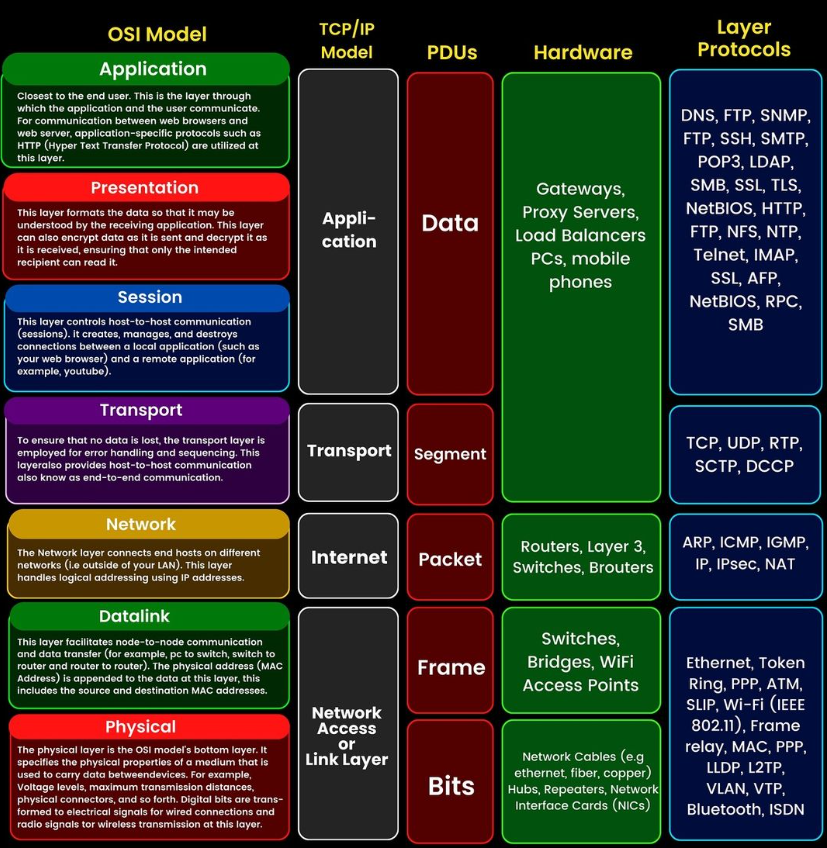

OSI/TCP Model
Understanding the OSI and TCP/IP models is essential for comprehending how different network protocols interact and function within cyber security frameworks. These models are crucial for diagnosing and resolving network issues effectively.
OSI Model Overview
The Open Systems Interconnection (OSI) model is a conceptual framework used to understand network interactions in seven layers. Each layer serves a specific function and communicates with the layers directly above and below it. The OSI Model includes:
Physical Layer (Layer 1): Deals with the physical hardware of networking, including cables, switches, and more. Issues at this layer affect connectivity and are often physical (e.g., cable disconnections).
Data Link Layer (Layer 2): Handles communication between adjacent network nodes and can identify and possibly correct errors that may occur in the Physical layer.
Network Layer (Layer 3): Manages device addressing, tracks the location of devices on the network, and determines the best way to move data.
Transport Layer (Layer 4): Transfers data between systems and provides acknowledgment of successful transmissions.
Session Layer (Layer 5): Controls the connections between computers. It establishes, manages, and terminates the connections.
Presentation Layer (Layer 6): Transforms data to provide a standard interface for the Application layer.
Application Layer (Layer 7): Closest to the end user. Network processes that involve interaction with the user are facilitated here.
TCP/IP Model Overview
The TCP/IP model is a more streamlined version of the OSI model, often used in real-world networking. It consists of four layers: Network Interface, Internet, Transport, and Application. Each layer in TCP/IP corresponds closely to one or more layers of the OSI model and is essential in troubleshooting various network issues.
OSI vs. TCP/IP Models
This diagram illustrates the differences between the OSI and TCP/IP models, highlighting how each model structures network communications differently and the protocols, protocol data units (PDU's) and hardware associated with each layer.